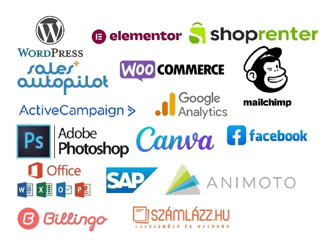

Bemutatkozás
Kedves Vállalkozók!
Tegye fel a kezét, aki érezte már úgy, hogy a napi adminisztratív munka mennyisége, a sok háttérfeladat elvonja a figyelmét és energiáját a vállalkozás lényegéről. Ki szeretne több időt megspórolni, miközben ezeket a feladatokat megbízható kezekben tudja?
Engedjétek meg, hogy röviden bemutatkozzam: Ambrus-Pethő Veronika vagyok, tanulmányaimat a Budapesti Gazdasági Főiskolán, a mesterképzést pedig a Budapesti Corvinus Egyetemen végeztem. Munkatapasztalataim színesnek mondhatók: dolgoztam kétszer külföldön a vendéglátásban, itthon többféle diákmunka keretében végeztem adminisztratív feladatokat, főállásban pedig két multinacionális cégnél ügyfélszolgálati majd pénzügyi pozícióban tevékenykedtem. Munkám során számos külföldi és hazai partnerrel működtem együtt sikeresen. Teljesítményemmel minden munkáltatóm maximálisan elégedett volt.
Most Virtuális Asszisztensként az eddigi munkaköreimet és feladataimat továbbfejlesztve, kibővítve egyéni vállalkozás keretein belül szeretném segíteni a vállalkozók munkáját, azzal hogy leveszem a rutinfeladatok terhét a vállukról.
Miért lennék jó választás Virtuális Asszisztensnek?
- 1. Egy alkalmazott magas bérköltsége helyett sokkal olcsóbb egy asszisztens havi óradíját megfizetni
- 2. Sok szoftverhez és feladathoz értek, és gyorsan megtanulom az új dolgokat.
- 3. Rugalmas, segítőkész és jó problémamegoldó vagyok
- 4. Jól beszélek idegen nyelveket: angol, német, (olasz)
- 5. Megbízhatóan, precízen dolgozom, határidőket tartom
Szolgáltatások
- Egyszerű, letisztult weboldalak készítése
- Általános adminisztráció
- Pénzügyi asszisztencia (számlázás, bejövő utalások érkeztetése, kimenő utalások összekészítése, könyvelési anyagok összekészítése, különböző kimutatások készítése ...)
- Árajánlatok kezelése
- Blog bejegyzések szerkesztése, módosítása, időzítése, posztolása
- WordPress oldalak módosítása
- Webshop termékek kezelése (áruk feltöltése, készlet frissítése, bejövő fizetés rögzítése …)
- Hírlevél írás, küldés
- Prezentáció készítés
- Ügyfélszolgálati e-mailek kezelése
- Marketing és egyéb kimutatások készítése
- Kisebb képszerkesztési feladatok (közösségi média bejegyzésekhez is)
- Rendezvény / Programszervezés
- (Közösségi média bejegyzések kezelése – igény esetén)
- Bármi egyéb feladat megbeszélés alapján
Szoftverismeretek
Ha nem ismerem valamilyen munkádhoz kapcsolódó szoftver használatát, nem probléma, villámgyorsan megtanulom!
Árak
Kis csomag - 30 óra/ hónap
111 000 Ft/ hónap
Ez 3700 Ft/ óra díjnak felel meg.
Normál csomag - 40 óra/ hónap
144 000 Ft/ hónap
Ez 3600 Ft/ óra díjnak felel meg.
Nagy csomag - 50+ óra/ hónap
175 000 Ft/ hónap
Ez 3500 Ft/ óra díjnak felel meg.
Weboldal készítés
50 000 Ft-tól
Függ a weboldal bonyolultságától
Kapcsolat
Keressetek bizalommal!
E-mail: veronika.ambruspetho@gmail.com
Telefon: +3620/382 9959